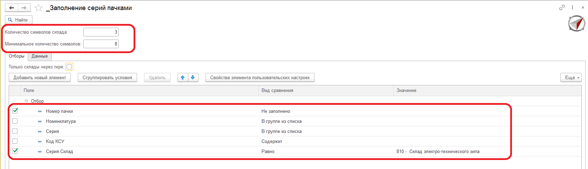

Компания Компас бухгалтера является официальным партнером фирмы 1С.
Основные направления нашей деятельности: разработка программного обеспечения, настройка локальных вычислительных сетей, решения для БЮДЖЕТА.
Готовы автоматизировать следующие направления на базе программ 1C:
- Бухгалтерский учет
- Управленческий учет
- Управление производством
- Складской учет
- Управление персоналом- Расчет заработанной платы
Контакты:
+7 8152 753-200
+7 8152 206-206
info@kbdk.ru
kbdk.ru
*********************************************************************************************************************************************
Информация об обработке
Обработка позволяет разобрать код КСУ серий для заполнения пачки в серии.
Работа с обработкой
1. В обработке заданы значения - минимальное количество символов - 8 - минимум для поиска серий по коду КСУ и количество символов склада - 3 - в случае когда код КСУ сформирован со складом без "-".
2. В обработке на вкладке Отборы по умолчанию установлены отборы. Работа с обработкой без отборов не рекомендуется, в связи с большим количеством данных. Рекомендуется делать отбор по складу.
3. После заполнения отборов нужно нажать кнопку "Найти".

4. На вкладке данные можно сделать сортировку, для этого нужно выбрать нужную ячейку, нажать кнопку сортировки (1).
5. Строки, в которых был найден склад и номер пачки, выделяются отметкой и готовы, после проверки, к изменению пачки в серии. Строки без пометки - не подходят по алгоритму формирования кода КСУ или склад/пачка не найдены по части кода КСУ, такие позиции требуется посмотреть отдельно.
6. Для заполнения пачек в серии необходимо нажать кнопку "Заполнить пачку в серии"(2)